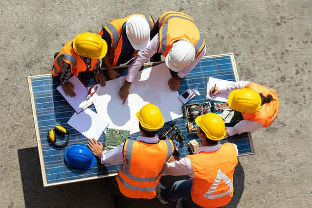
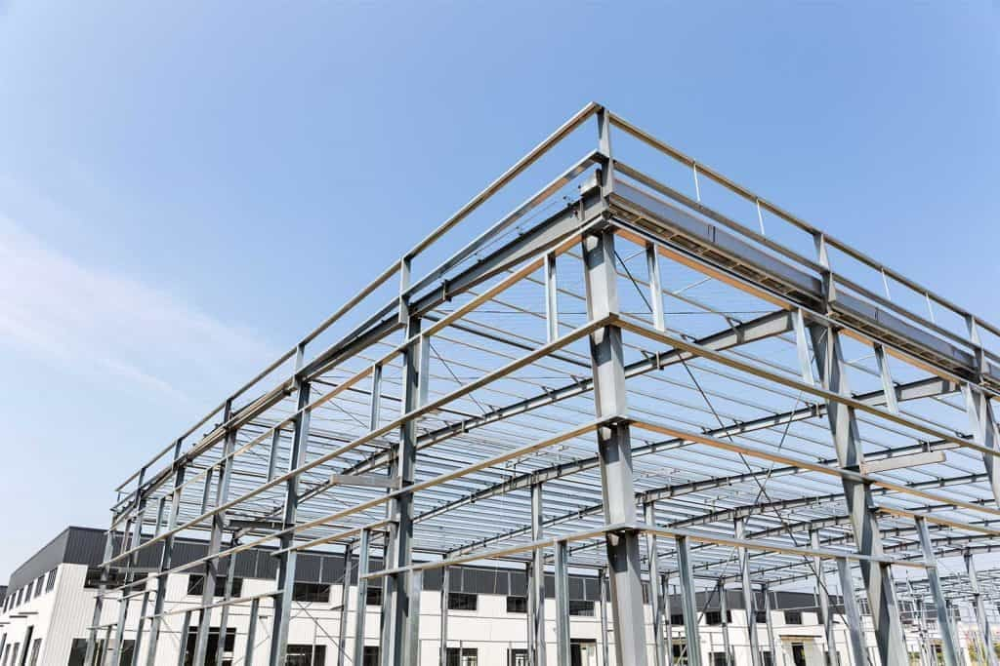
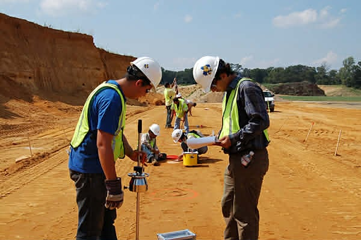
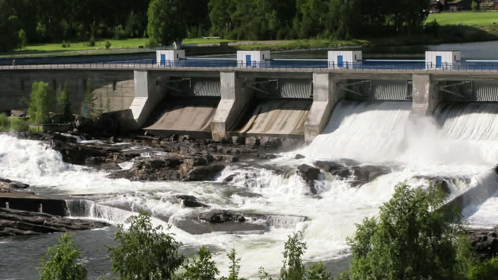
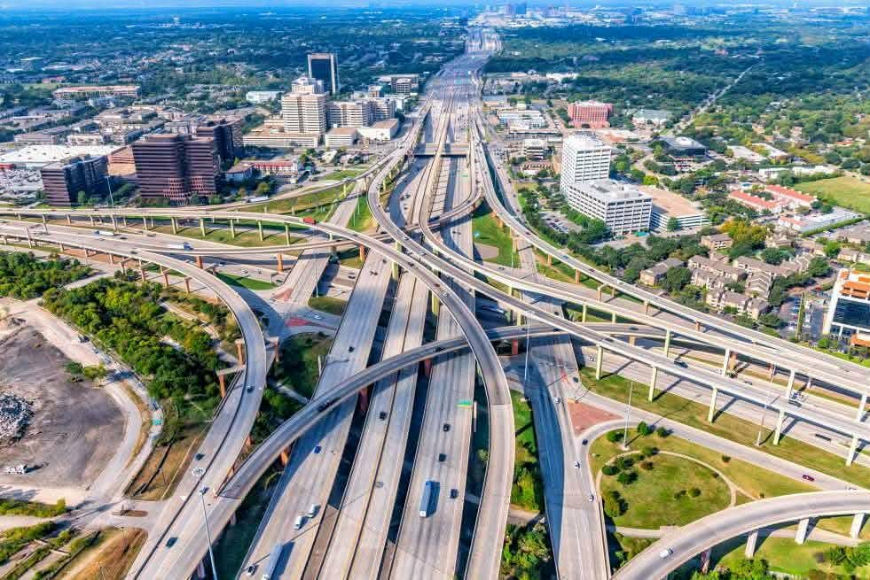
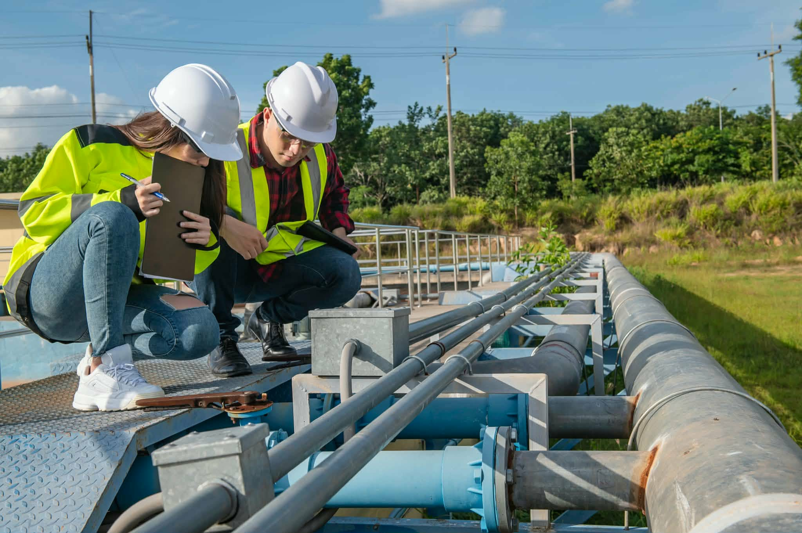

In this specialization, civil engineering students can learn the design principles of construction, building code regulations and operation steps for a project. They typically take courses on how to manage a project's resources and equipment, then how to construct buildings that are safe, functional and sustainable. Students also study how to organize each construction process step, including making a timeline, maintaining a materials inventory and preparing a budget. Programs with a management component often emphasize building information modeling (BIM), which is an information technology tool that many construction engineers use for their endeavors.
Here are some examples of building projects a construction engineering and management graduate might conduct:
Civil engineering has a variety of specializations that focus on different topics and project goals. When undergraduate students choose this major, it's important they select an area of study so they can receive specific training and better prepare for a future career. By learning some fundamental information about civil engineering specializations, you can determine a career path that best suits your interests and long-term goals. In this article, we define what civil engineering specialization is, list the different types and provide examples of project opportunities, salary information and tips for your selection process.
Types of Civil Engineering Specialization
Here are the seven primary types of engineering specializations you can study:

Structural engineering students learn how to design large structures and ensure they can stay functional during high winds and natural disasters, like earthquakes. They study the gravitational properties of a structure to determine how much weight they can handle, as this step allows them to create support mechanisms through beams and columns. It's important for these students to take courses on other physical science topics, including kinetics, shock waves and airflow. After they graduate from a program, they can further specialize in building, bridge design or aircraft engineering.

In this specialization, civil engineering students can learn the design principles of construction, building code regulations and operation steps for a project. They typically take courses on how to manage a project's resources and equipment, then how to construct buildings that are safe, functional and sustainable. Students also study how to organize each construction process step, including making a timeline, maintaining a materials inventory and preparing a budget. Programs with a management component often emphasize building information modeling (BIM), which is an information technology tool that many construction engineers use for their endeavors.

Geotechnical engineering is a specialization that involves the study of rocks, soil and any artificial materials that support a system. For example, a graduate may coordinate the construction of an underground mining facility. It's important for geotechnical students to learn about the chemical properties of earth materials, as different types of rock may require different building techniques. When completing their degree, students often study water and soil interactions, plus how to design pavement structures and predict whether a natural slope can handle the additional weight.

Environmental engineering students learn how to reduce the overall impact of an artificial system on the world's ecosystem and manage natural resources for a construction project. They typically study the chemical properties of water, soil and air so they can design technical mechanisms that solve pollution issues. After they graduate, they may help companies improve the sustainability of their facilities and advise legislators on environmental policies. Their projects often result in the production of green energy, which is a renewable power source from natural occurrences like sunlight or water.

In a transportation engineering specialization, students learn how to design networking systems that individuals use for traveling purposes, including railroads, subways, airways and seaways. They study how to develop infrastructure to help people move between locations safely and efficiently, including pathway plans. Transportation engineering students also learn how to modify natural environments to plan transportation systems, like an artificial canal. When taking coursework, students typically study physical science properties like applied force and lateral force, which involves how earthquakes or wind storms may affect a system's durability.

Water resources engineering involves developing infrastructure for safe drinking water in towns and cities. Students learn the hydrologic cycle, which is how water molecules move between the atmosphere and the earth over time. They use this knowledge of natural systems to design water sanitation facilities and artificial lakes or ponds. This civil engineering specialization also involves hydraulics, which refers to how water moves through pipes and channels through natural forces in physical science.
This specialization involves the study of all items and components required for a construction project, such as wood, steel and concrete. They may also study stones, soil, plastics and fabrics, depending on a university program's requirements. Materials engineering students learn the chemical properties of these items, which allows them to determine the best possible materials for a project or adjust them on an atomic level. For example, a professional might measure a component's ability to handle heat or conduct electricity.